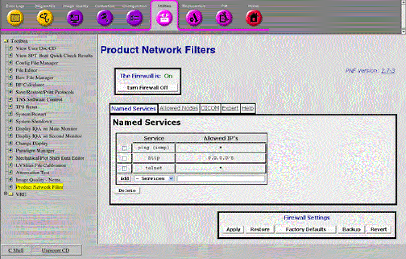
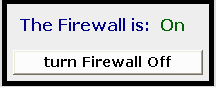
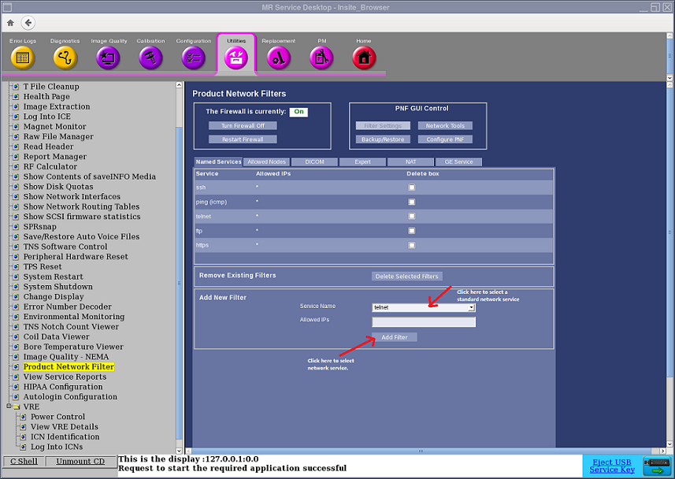
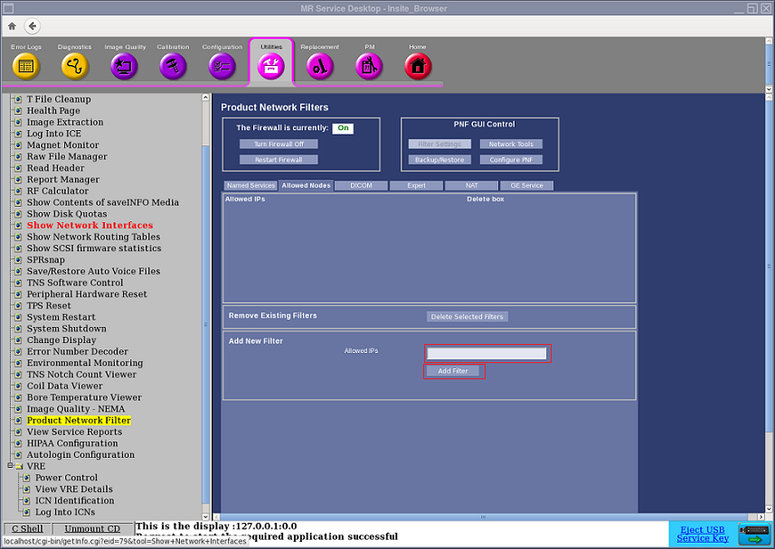
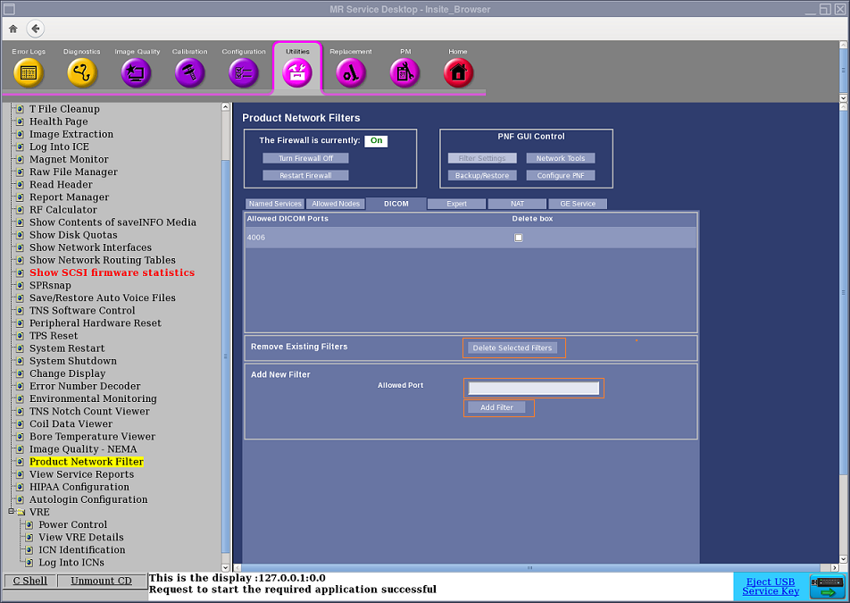
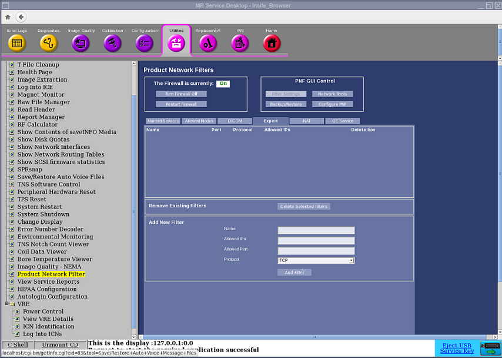

- 00000018WIA3002CF20GYZ
- id_131063301.8
- Jul 27, 2022 1:23:19 PM
Product Network Filters
| Last Revised: | 08/29/2006 |
Overview
Product Network Filters (PNF) is a software firewall tool which allows a site Network Administrator to control traffic from the site's internal network to the Diagnostic Imaging System. This tool was created in response to the customer's need for security.
This tool is accessible from the Common Service Desktop (CSD.)

| Notice | |
|---|---|
Firewall State
| Notice | |
|---|---|
The Firewall can be turned ON and OFF by clicking the buttons in Figure 2. In order for the system to recognize changes, click the Apply button.

Tabs
Named Services Tab
The Named Services Tab, is the screen where the site's network administrator selects a standard networking service to open to this system from the site's network. See Figure 3.

Adding a Network Service
-
To add a network service, click the drop-down menu labeled Services.
Standard Networking Services offered are:
-
telnet
-
ssh
-
ftp
-
rexec
-
rlogin
Note: This service does not apply to software version 30 and later. - rsh
- http
- https
- tftp
- ldap
- ssl/tls
- ntp
- portmap
- ping
-
-
Select a network service from the drop-down menu.
-
An IP address can be entered in the Allowed IP's field or the field can be left blank.
IP addresses allow the user to create rules where network communication is only accepted from a predetermined host or set of hosts. Below is a list of acceptable ways to populate the IP fields. The default value for IP fields is all IP addresses.
-
w.x.y.z = single IP address (ex: 1.2.34.5)
-
w.x.y.z/a.b.c.d = subnet with netmask (ex: 1.2.0.0/255.255.0.0)
-
w.x.y.z/a = subnet with byte netmask, this is the same as the previous subnet but specifying the netmask as a single byte (ex: 1.2.0.0/16)
-
w.x.y.a - w.x.y.b = IP range, all hosts between two end points (ex: 1.2.34.5 - 1.2.34.10)
-
-
Click Add. This service is now added to the list. If the Allowed IP's field was left blank an * will appear.
Removing a Network Service
-
Check the box next to the Node IP on the list.
-
Click the Delete button.
Allowed Nodes Tab
The Allowed Nodes tab opens all network services to a specific IP address. See Figure 4.

Adding an Allowed Node
-
Enter the IP address in the Node IP field.
IP addresses allow the user to create rules where network communication is only accepted from a predetermined host or set of hosts. Below is a list of acceptable ways to populate the IP fields. The default value for IP fields is all IP addresses.
-
w.x.y.z = single IP address (ex: 1.2.34.5)
-
w.x.y.z/a.b.c.d = subnet with netmask (ex: 1.2.0.0/255.255.0.0)
-
w.x.y.z/a = subnet with byte netmask, this is the same as the previous subnet but specifying the netmask as a single byte (ex: 1.2.0.0/16)
-
w.x.y.a - w.x.y.b = IP range, all hosts between two end points (ex: 1.2.34.5 - 1.2.34.10)
-
-
Once the IP address has been entered, click Add so the IP Address will be added to the list.
-
Once all Nodes have been added, click the Apply button to make changes to the PNF configuration.
Removing an Allowed Node
-
Check the box next to the Node IP in the list.
-
Click the Delete button to remove the Node IP from the list.
-
Once all changes have been made, click the Apply button to make changes to the PNF configuration.
DICOM Tab
This screen may be used to verify that the correct DICOM port was populated during installation. This field should be auto-populated during the initial set-up of the DICOM ports. Also additional DICOM ports can be added. See Figure 5.

Adding a DICOM Port
-
Enter the DICOM Port in the field next to theAdd button.
-
Click the Add button so the new DICOM Port is in the list.
-
Once all DICOM Ports have been added, click the Apply button to make changes to the PNF configuration.
Removing a DICOM Port
-
Check the box next to the DICOM Port in the list.
-
Click the Delete button to remove the DICOM Port from the list.
-
Once all changes have been made, click the Apply to make changes to the PNF configuration.
Expert Tab
The Expert Tab allows a more flexible method for the network administrator to create rules. Any input to this tab will require networking expertise, please work with the site's network administrator when working in this tab.
This tab is also used to view all of the application rules that have been created. See Figure 6.

Creating a Rule
-
To create a rule for the firewall, enter the application name in the Name field.
-
Enter the Port info in the Port field.
-
Click on the Protocol drop-down menu for the rule to be applied.
-
If needed, enter the IP address that this rule will be applied.
IP addresses allow the user to create rules where network communication is only accepted from a predetermined host or set of hosts. Below is a list of acceptable ways to populate the IP fields. The default value for IP fields is all IP addresses.
-
w.x.y.z = single IP address (ex: 1.2.34.5)
-
w.x.y.z/a.b.c.d = subnet with netmask (ex: 1.2.0.0/255.255.0.0)
-
w.x.y.z/a = subnet with byte netmask, this is the same as the previous subnet but specifying the netmask as a single byte (ex: 1.2.0.0/16)
-
w.x.y.a - w.x.y.b = IP range, all hosts between two end points (ex: 1.2.34.5 - 1.2.34.10)
-
-
Once all fields have been populated, click the Add button. The rules created will now be added to the list.
-
Once all rules have been made, click the Apply to make changes to the PNF configuration.
Removing a Rule
-
Check the box next to the Name in the list.
-
Click the Delete button to remove the rule from the list.
-
Once all changes have been made, click the Apply to make changes to the PNF configuration.
Troubleshooting
Troubleshooting the firewall can be done by turning the Firewall ON and OFF. See Figure 7.
The Firewall can be turned ON and OFF by clicking the turn Firewall Off or turn Firewall On buttons.
| Notice | |
|---|---|